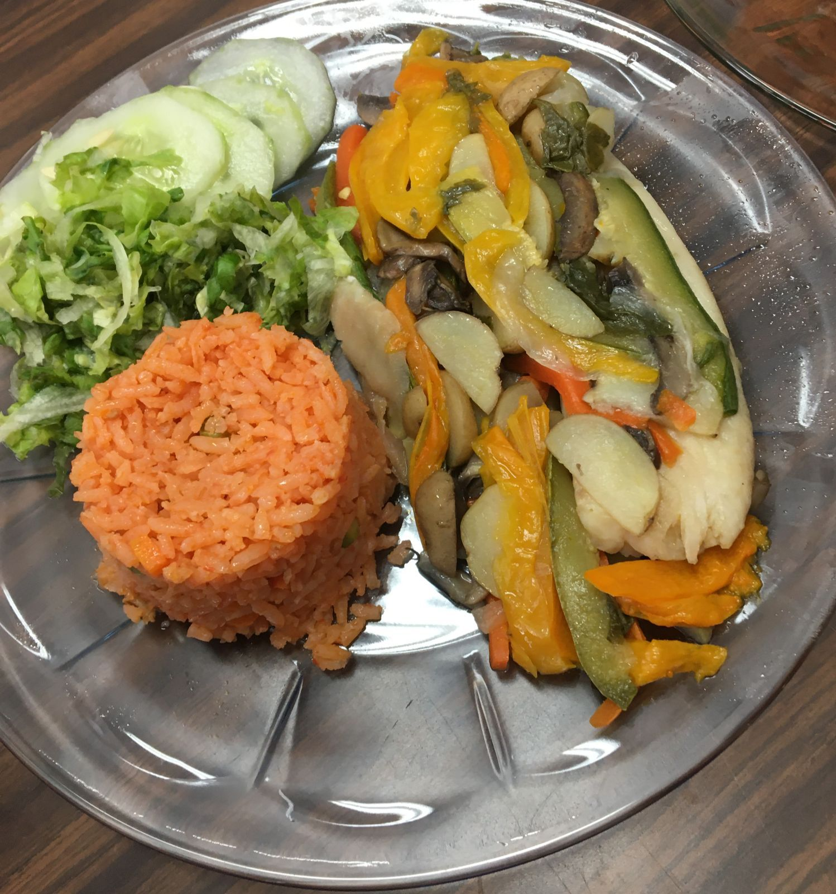

PROYECTO TRANSVERSAL
PLATILLO SALUDABLE
FILETE EMPAPELADO

CENTRO DE ESTUDIOS DE BACHILLERATO,
"LIC. JESUS REYES HEROLES"
CEB 6/13.
Judith Torres Bartolo.
Grupo:602.
PROYECTO TRANSVERSAL.
Encargados: Cesar Eumir Rendon Rodriguez
Maria del Rocio Rodriguez Rodriguez
Docente: Jose Agustin Bautista Gutierrez
Esta página parte de la materia de "Páginas web", se crea un "Proyecto transversal" junto con las materias, de "Ecología" y "Ciencias de la Salud".
En el cual se involucran las tres materias. "Páginas web" tiene como objetivo mostrar el "Platillo Saludable" con una estructura echa en la materia, en la cual contiene diferentes tipos de letra, colores, diferentes fomas de agregar imágenes y videos, incluso podemos incluir en nuestros trabajos, audio y tablas.
La materia nos ayuda a desarrollar nuetra creatividad, ya que nosotros como alumnos tenemos la oportunidad de crear nuestra página a nuestro gusto, agregando lo antes dicho de la mejor manera, buscando siempre una buena presentación.
Mediante esta página damos a conocer que un platillo saludable es una opción alimenticia que promueve tanto la salud personal como el bienestar ambiental.
"Elegir comer saludable es un paso hacia una vida más equilibrada y sostenible".
Espero te guste y disfrutes esta página.
Indice.